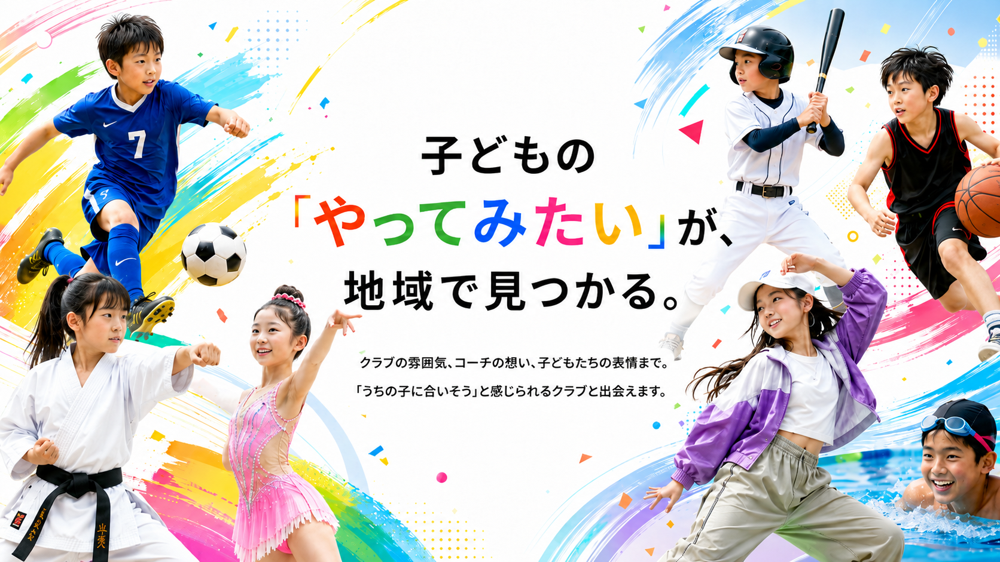
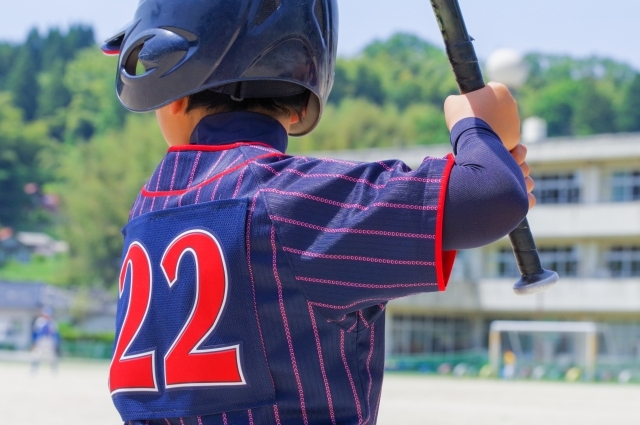
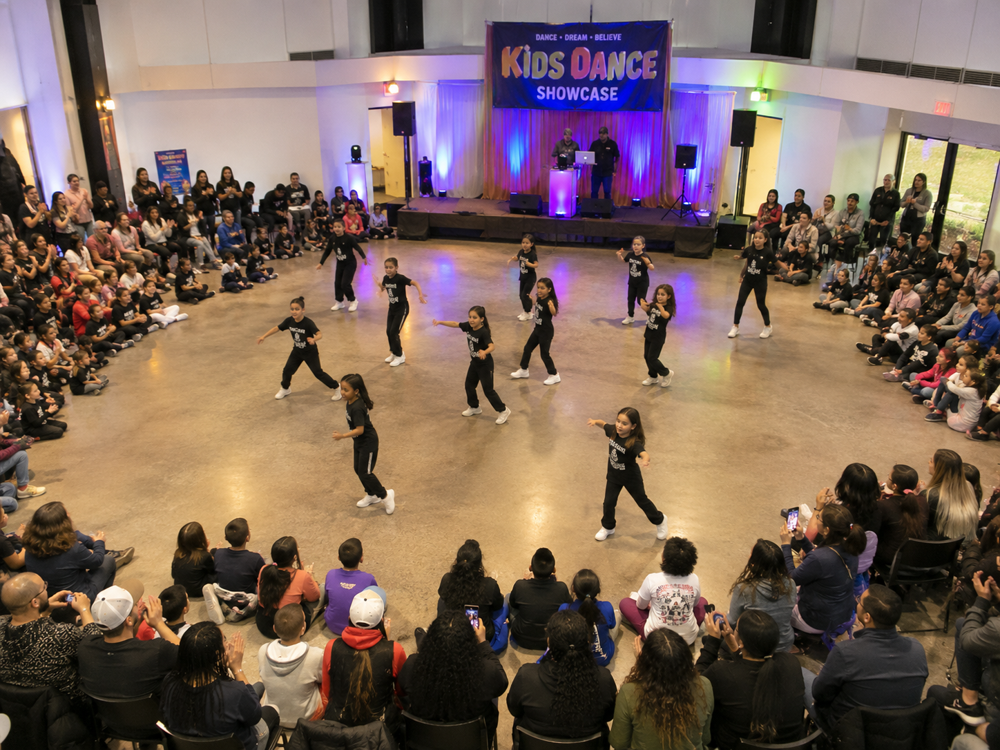
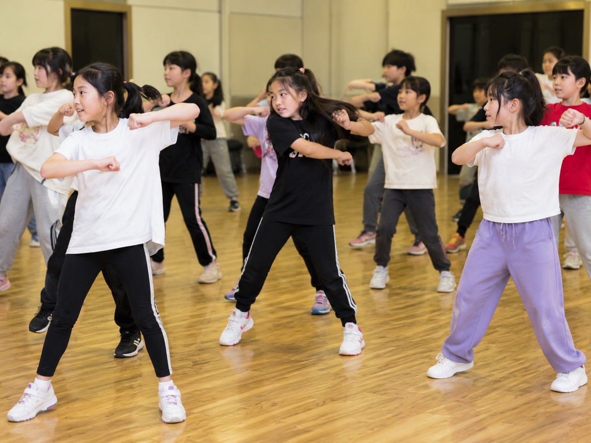

さくらママ
コーチが一人ひとりを丁寧に見てくれて、安心して通わせられます。いつもありがとうございます！
青空サッカークラブ





「うちの子に合うクラブを見つけたい」
その気持ちに、ちゃんと寄り添える場所を作りたい。
子どもの「やってみたい」は、形も大きさもひとつじゃない。
本気で挑戦したい想いも、まずは楽しんでみたい気持ちも。
スポーツが育てるのは、運動能力だけじゃない。
仲間との関わり、挑戦する心、自分らしさも──
どちらも大切にしてくれるクラブとの出会いを届けたくて、
チビスポを始めました。
チビスポは、子どもたちがスポーツを通じて自分らしく成長できる環境を応援します。
さまざまな競技やチーム、体験の場を通して、未来の「好き」や「得意」に出会えるきっかけを提供します。

コーチが一人ひとりを丁寧に見てくれて、安心して通わせられます。いつもありがとうございます！
青空サッカークラブ練習の雰囲気がとても良く、子どもたちが楽しそうに活動しています。地域にある最高なクラブです！
緑山ベースボールキッズ発表会に向けてみんなで一生懸命取り組む姿に感動！子どもたちの成長をいつも感じています。
Ripples Dance Companyコーチの指導が分かりやすく、子どもたちのやる気を引き出してくれます。いつもありがとうございます！
みなみ水泳クラブ礼儀やあいさつをとても大切にしているクラブ。子どもが心も体も成長しているのを感じます。
誠心空手道場